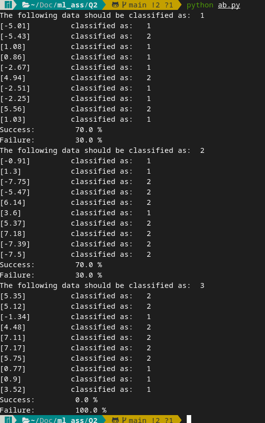
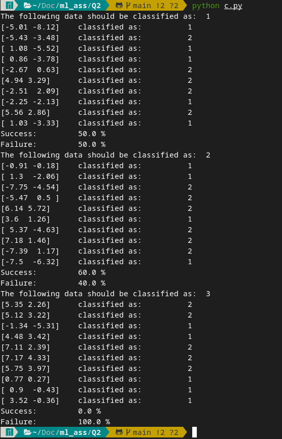
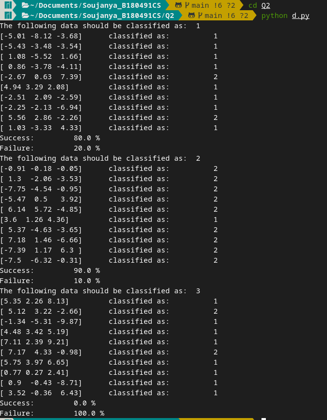
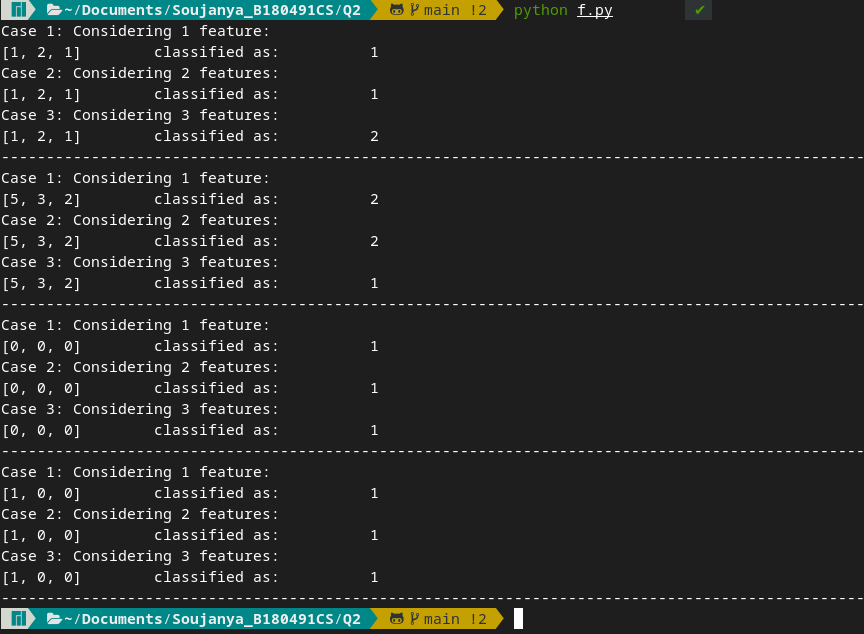

The below formuala is implemented this way:
def discriminant(x, mean, covariance, dimension, probability):
#Check if it is univariate
if dimension == 1:
dis = (-0.5*(x - mean) * (1 / covariance))* (x-mean) - 0.5*log(2*pi) - 0.5*log(covariance)
else:
temp =np.matmul(-0.5*(x - mean), np.linalg.inv(covariance))
dis = np.matmul(temp, (x-mean).T) -0.5*dimension*log(2*pi) - 0.5*log(np.linalg.det(covariance))
if(probability == 0):
return dis
else:
dis += log(probability)
return dis
Initial check has been done to get rid of numpy errors (inverse of scalar quantities) when the data is has the dimension 1 (single feature), other errors can also be avoided with above conditions.
Other variables should also be initialised along with the data
dataclass = [
[[-5.01, -8.12, -3.68], [-5.43, -3.48, -3.54], [1.08, -5.52, 1.66], [0.86, -3.78, -4.11], [-2.67, 0.63, 7.39], [4.94, 3.29, 2.08], [-2.51, 2.09, -2.59], [-2.25, -2.13, -6.94], [5.56, 2.86, -2.26], [1.03, -3.33, 4.33]],
[[-0.91, -0.18, -0.05], [1.30, -2.06, -3.53], [-7.75, -4.54, -0.95], [-5.47, 0.50, 3.92], [6.14, 5.72, -4.85], [3.60, 1.26, 4.36], [5.37, -4.63, -3.65], [7.18, 1.46, -6.66], [-7.39, 1.17, 6.30], [-7.50, -6.32, -0.31]],
[[5.35, 2.26, 8.13], [5.12, 3.22, -2.66], [-1.34, -5.31, -9.87], [4.48, 3.42, 5.19], [7.11, 2.39, 9.21],[7.17, 4.33, -0.98], [5.75, 3.97, 6.65], [0.77, 0.27, 2.41], [0.90, -0.43, -8.71], [3.52, -0.36, 6.43]]
]
n = len(dataclasses) # number of classes
d = len(dataclasses[0][0]) # number of features
#Assuming each class is equally probable
probability = [1/n] * n
#Find mean and covariance
means = [] # d-component mean vector
covariance = [] # d by d covariance matrix for each set
#Finding means in each column
for sing in dataclasses:
means.append(sing.mean(axis=0))
covariance.append(np.cov(sing.T))
( Numpy functions can be used to find mean and covariance )
We can find the g vector using the code below and classify x to the class where g is maximum. Make sure to change the lists to numpy arrays.
for dataclass in dataclasses:
k+=1
print("The following data should be classified as: ", k)
missed = 0
count = 0
for data in dataclass:
gi = [0] * n # each gi
for i in range(n):
gi[i] = discriminant(data, means[i], covariance[i], d, probability[i])
#find maximum g[i]
maximum_indices = gi.index(max(gi)) + 1
count+=1
if(maximum_indices != k):
missed += 1
print(data, "\t classified as: \t", maximum_indices )
print("Success: \t", ((count - missed) / count)*100 , "%")
print("Failure: \t", ((missed) / count)*100 , "%")
This should be the following output:

Change the probabilty from [1/n, 1/n, 1/n] to [0.5, 0.5, 0] Change the inputs accordingly. (Remove other features except x1)
Failure percentage is the percentage of points misclassified This is the expected output: 
Change the inputs accordingly. (Remove other features except x1 and x2)
Failure percentage is the percentage of points misclassified This is the expected output: 
Change the inputs accordingly. Use all features. This is the expected output: 
Comparing all the outputs, it is evident that using x1 is better than the other 2 cases. Reason could be higher covariance
Similar to the questions above, we could consider 3 cases:
We use the covariance and mean matrices of the data given above
ix = [[1, 2, 1], [5, 3, 2], [0, 0, 0], [1, 0, 0]]
for ip in ix:
print("Case 1: Considering 1 feature: ")
d = 1
for i in range(n):
g[i] = discriminant(ip[0], means[i][0], covariance[i][0][0], d, probability[i])
maximum_indices = g.index(max(g)) + 1
print(ip, "\t classified as: \t", maximum_indices )
print("Case 2: Considering 2 features: ")
d = 2
for i in range(n):
g[i] = discriminant(ip[0:2], means[i][0:2], covariance[i][0:2, 0:2], d, probability[i])
maximum_indices = g.index(max(g)) + 1
print(ip, "\t classified as: \t", maximum_indices )
print("Case 3: Considering 3 features: ")
d = 3
for i in range(n):
g[i] = discriminant(ip, means[i], covariance[i], d, probability[i])
maximum_indices = g.index(max(g)) + 1
print(ip, "\t classified as: \t", maximum_indices )
This is the output: 